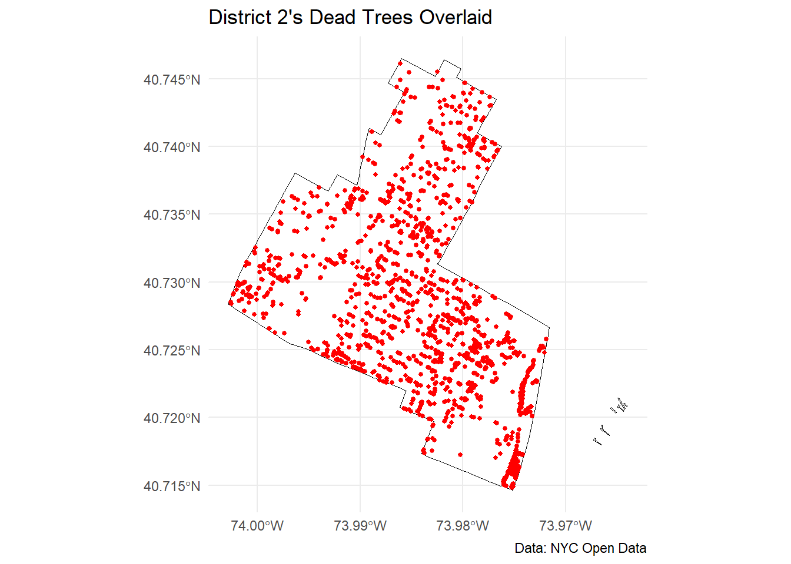
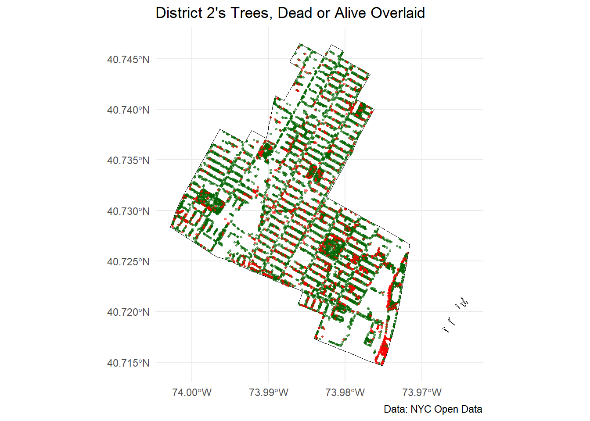
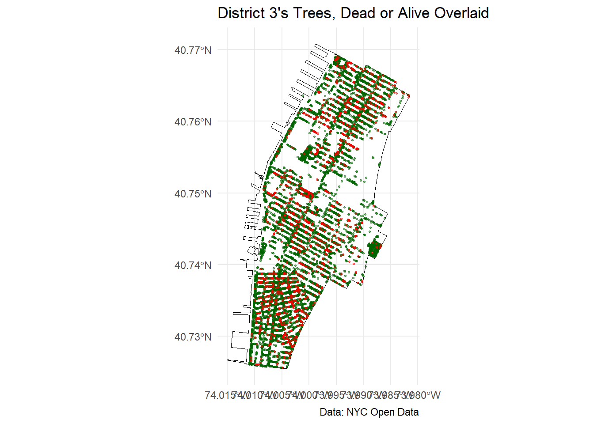

library(ggplot2)ggplot() +# Layer 1: Council district polygonsgeom_sf(data = DATA,fill =NA,color ="black",linewidth =0.3) +# Layer 2: Tree pointsgeom_sf(data = trees,aes(),color ="darkgreen",alpha =0.01,size =0.01) +coord_sf() +labs(title ="NYC Trees Overlaid on City Council Districts",caption ="Data: NYC Open Data" ) +theme_minimal()
library(ggplot2)library(dplyr)data_dist_two <- DATA %>%filter(CounDist ==2)distr_two_alive <- trees_with_districts %>%filter(CounDist ==2) %>%filter(tpcondition !="Dead")distr_two_dead <- trees_with_districts %>%filter(CounDist ==2) %>%filter(tpcondition =="Dead")dist_two_plot <-ggplot() +# Layer 1: Council district polygonsgeom_sf(data = data_dist_two,fill =NA,color ="black",linewidth =0.3) +# Layer 2: Tree pointsgeom_sf(data = distr_two_alive,aes(),color ="darkgreen",alpha = .5,size = .5) +# Layer 3: Tree pointsgeom_sf(data = distr_two_dead,aes(),color ="red",alpha = .5,size = .5) +coord_sf() +labs(title ="District 2's Trees, Dead or Alive Overlaid",caption ="Data: NYC Open Data" ) +theme_minimal()data_dist_three <- DATA %>%filter(CounDist ==3)distr_three_alive <- trees_with_districts %>%filter(CounDist ==3) %>%filter(tpcondition !="Dead")distr_three_dead <- trees_with_districts %>%filter(CounDist ==3) %>%filter(tpcondition =="Dead")dist_three_plot <-ggplot() +# Layer 1: Council district polygonsgeom_sf(data = data_dist_three,fill =NA,color ="black",linewidth =0.3) +# Layer 2: Tree pointsgeom_sf(data = distr_three_alive,aes(),color ="darkgreen",alpha = .5,size = .5) +# Layer 3: Tree pointsgeom_sf(data = distr_three_dead,aes(),color ="red",alpha = .5,size = .5) +coord_sf() +labs(title ="District 3's Trees, Dead or Alive Overlaid",caption ="Data: NYC Open Data" ) +theme_minimal()
Government Tree Project Proposal
We are proposing to begin a tree project within district 2. We are seeking to being the replacement of the dead trees within Manhattan, beginning with district 2. District 2 was chose as it was the Manhattan district that had the highest ratio of dead trees. The start of their removal for replacement for new young trees would be of great benefit to the ecosystems and environments of the surrounding area. Seeing as there are 2, 11563 trees in district 2 but there are 2, 1576 dead trees, it would be in our best interest to begin on the project as soon as possible.
Code
dead_tree_plot

This project makes sense for this district as it has the highest ratio of dead trees of all districts within Manhattan. It would be a good place to start compared to the other 9.It may not have the most dead trees to tackle for the project but with the higher density, the effects of replacement may show quicker due to the difference in percentage of trees being replaced.
Code
dist_two_plot

Code
dist_three_plot

Looking at both district 2 and 3, we can see that there are less problem areas across the whole district. When cleaning theses areas, there should be a noticable change in the environment and ecosystem with these new healthy trees being put in their place.